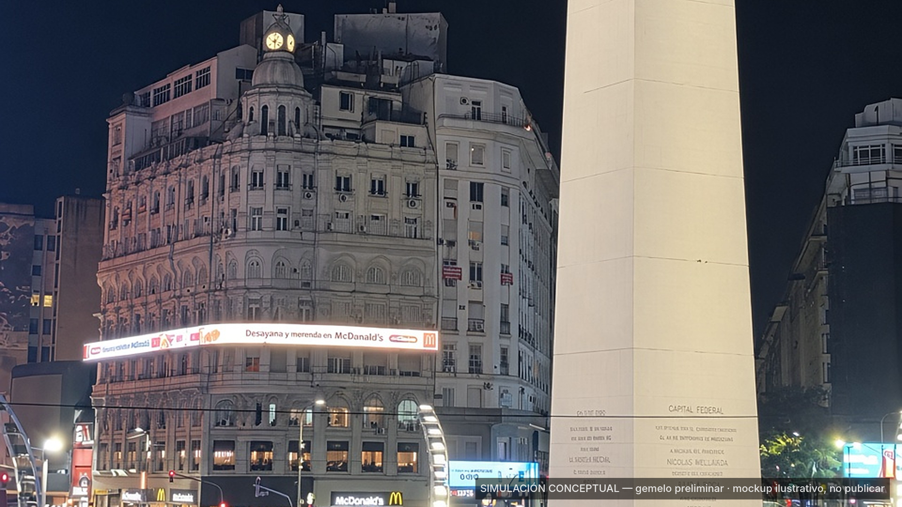
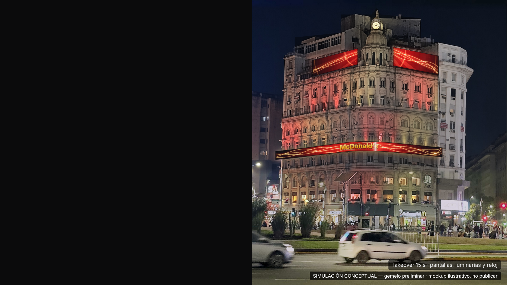
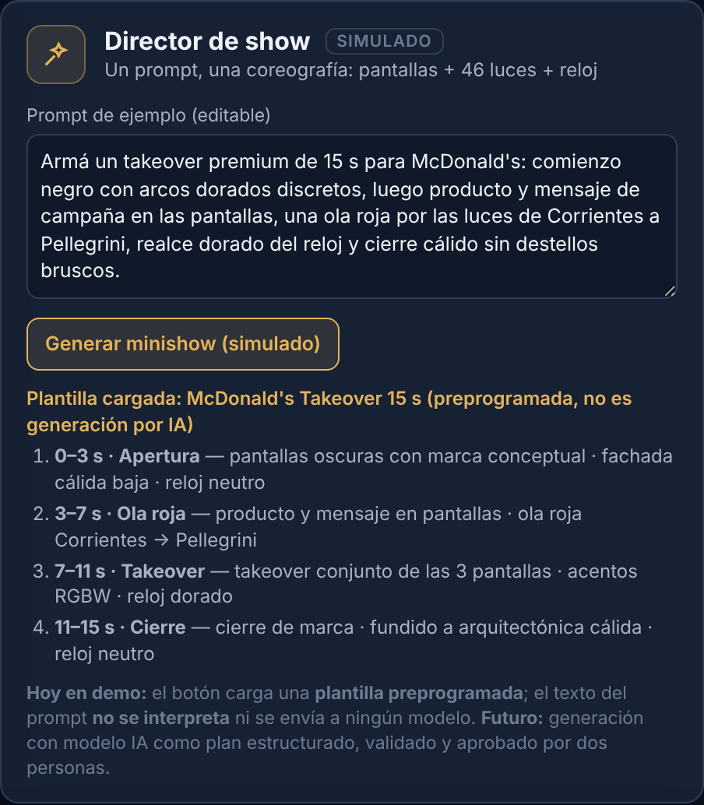
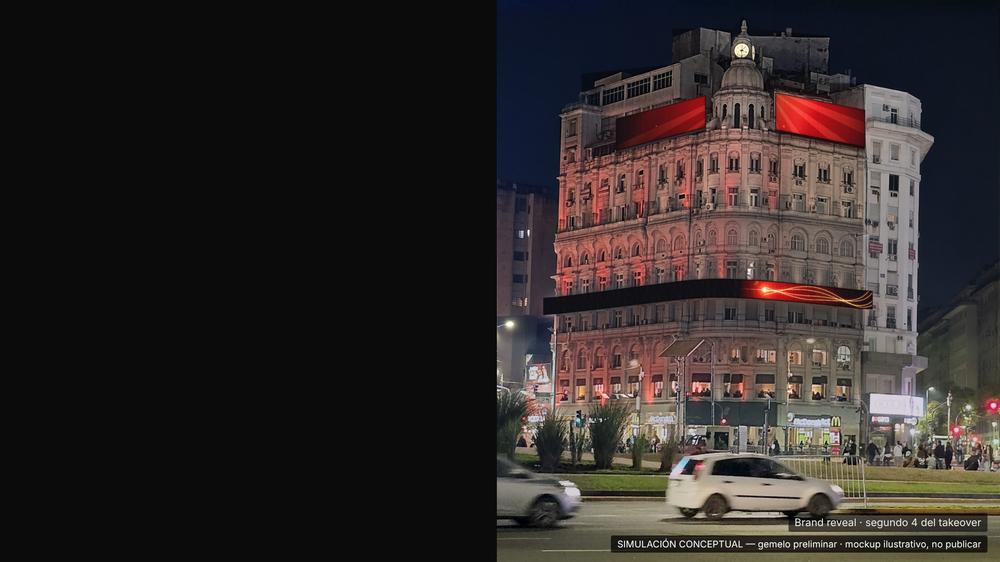

Un edificio. Un momento. Una marca.
Un lanzamiento frente al Obelisco, pensado para coordinarse desde una sola plataforma.
Sin datos de audiencia o tráfico en esta versión: solo se incluirán con fuente verificable y fecha.

Pantallas Corrientes + Pellegrini + media, 46 luminarias RGBW y reloj sobre un mismo timeline de 15 s.
Simulación offline sobre foto real: no conectada a equipos, no envía Art-Net, sACN ni DMX. Ubicación de luminarias preliminar, no plano de montaje.


Mockup ilustrativo sin aprobación de la marca. Logos y piezas oficiales solo con autorización de McDonald's / Arcos Dorados.
Nada de lo anterior se probó todavía con pantallas, iluminación ni reloj reales. La demo grabada muestra solo lo implementado.
| Lanzamiento protagonista exclusivo | Esquema compartido | |
|---|---|---|
| Presencia | McDonald's es la única marca durante el período del lanzamiento | McDonald's comparte la rotación con otras marcas |
| Takeover 15 s | Momento propio, repetido según la grilla que se acuerde | A definir según disponibilidad |
| Fachada y reloj | Coreografía sujeta a la implementación de iluminación y reloj (roadmap) | |
| Condiciones | Duración, frecuencia, valores y producción: a definir y sujetos a negociación | |
Pendiente de Fer: confirmar que estos dos esquemas son los que se muestran. Sin precios en esta versión.
TRUST — control y aprobación de contenido para el edificio del Obelisco.